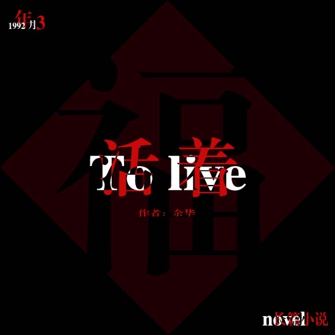
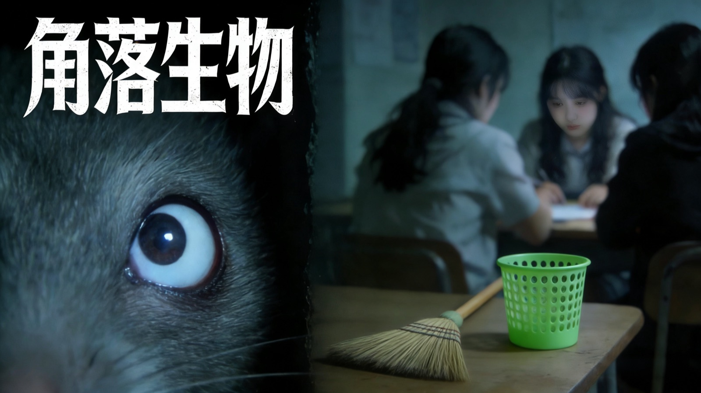
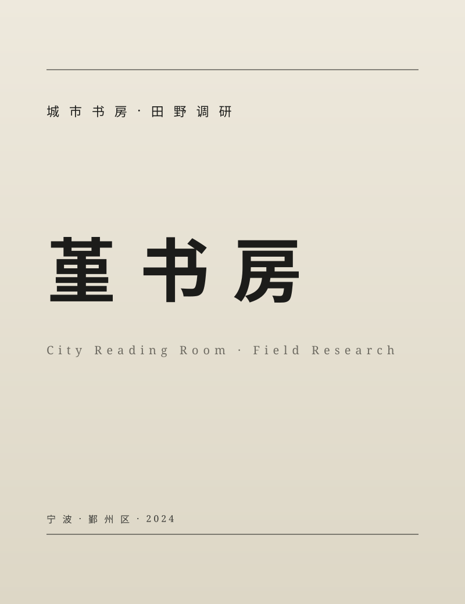
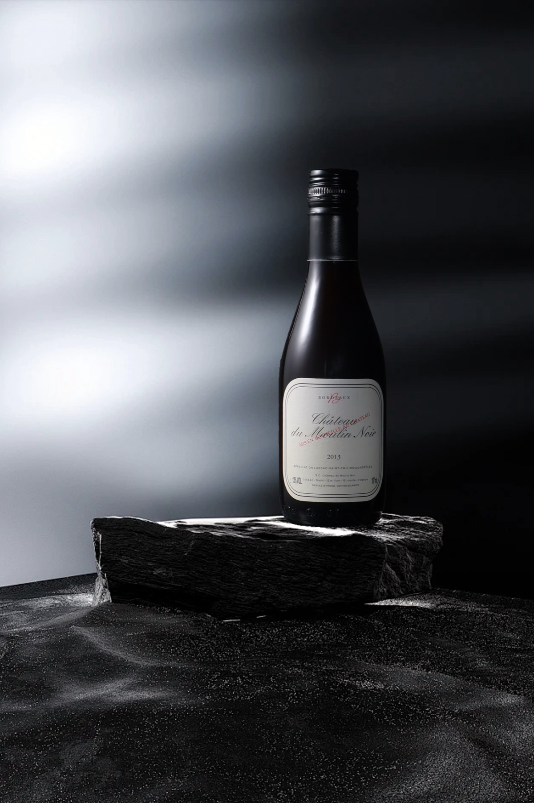
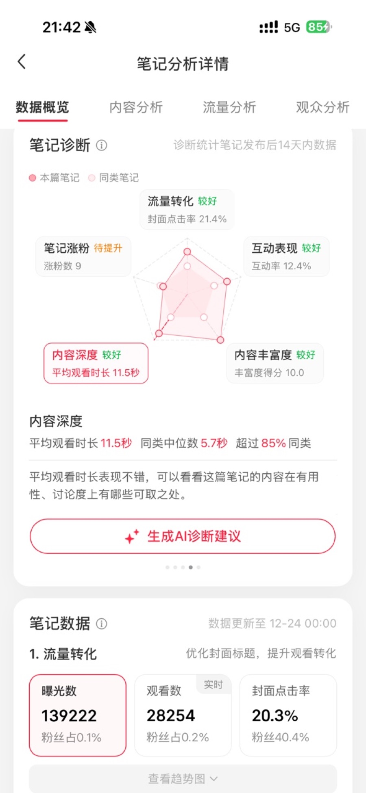
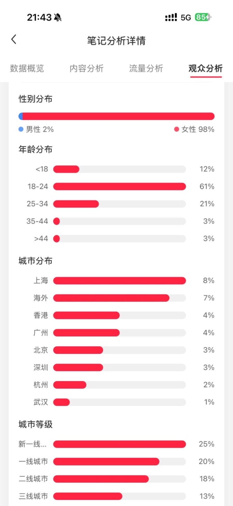
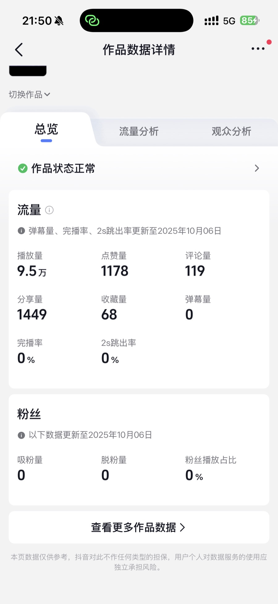

浙江大学宁波理工学院
新闻学专业 · 本科（在读）
于专科阶段传播与策划的实务积累之上，进一步系统研习新闻学的理论框架与采编流程， 聚焦新闻采访写作、媒介伦理与融媒体表达，深化对公共议题的判断力与叙事的严谨性。
Curriculum Vitae · 2025
以审慎与克制的方式，记录、表达与传递。
现于浙江大学宁波理工学院新闻学专业就读；此前毕业于宁波财经学院传播与策划专业。 长于内容编辑、视觉记录与活动统筹，于党政机关与校园组织中均有实务经验， 习惯以系统化的方式处理信息，并以稳定、克制的风格输出成果。
新闻学专业 · 本科（在读）
于专科阶段传播与策划的实务积累之上，进一步系统研习新闻学的理论框架与采编流程， 聚焦新闻采访写作、媒介伦理与融媒体表达，深化对公共议题的判断力与叙事的严谨性。
传播与策划专业 · 专科
主修课程涵盖传播学概论、视听语言、市场营销学、公共关系学、媒介经营管理、网络编辑实务， 兼修摄影基础、摄像基础、平面广告设计、视频音频剪辑技术、影视广告与文案写作， 形成自策划至呈现的完整知识结构。
文员
宣传部干事
社科类项目负责人

Book Design · 书籍编排
以余华长篇小说《活着》为文本，确立黑、白、红的基础色语言， 完成封面与十九面内页的概念编排——以版式、字形与色彩演绎命运的重量。
查看作品 →
Short Film · 校园悬疑
独立担任策划、编剧、分镜、导演与摄影。以「孤独与误解」为题， 借校园宿舍的封闭场域，让悬疑外壳之下生出关于「他者」的发问。
查看作品 →
WeChat Editorial · 新媒体运营
以女性视角为内核，五个月持续运营 20 期推文。 独立完成 logo 与栏目体系、选题、文案、排版、视觉与后台数据复盘。
查看作品 →
Field Research · 城市公共文化
以宁波市鄞州区「堇书房」为田野， 完成实地走访、访谈与文献梳理，独立撰写完整研究报告， 获「挑战杯」校赛三等奖。
查看作品 →
Photography · 摄影
独立完成策划、布光、拍摄与后期。 以稳定的取景与克制的色彩， 整理一组横跨商业静物、人物与街头纪实的影像。
查看作品 →在「她说」之外，分别在小红书与抖音上进行短内容的练习， 亦有数据新闻方向的尝试正在筹备。

个人账号的时尚穿搭分享，以图文结合的形式记录日常造型。

另一组穿搭笔记。在场景与单品之间寻找一个稳定的图像语言。

短视频方向的尝试——围绕游戏内容，练习节奏剪辑与镜头叙述。
围绕公共议题的数据新闻方向。报告、可视化与文本叙述同时筹备中，敬请期待。